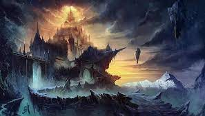
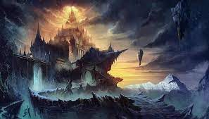

¿Quién fue Odín?
Fue el principal dios nórdico de los vikingos, se le conoce comúnmente como el padre de todos, ya que se le atribuye la gobernación del mundo de los hombres y los dioses. Según la mitología nórdica, Odín creó a la primera pareja de humanos llamados Ask y Embla, así como también inventó las runas.
Por ser el rey de todos los dioses se caracterizaba por ser el más sabio, para llegar a serlo tuvo que realizar ritos y hasta sacrificó su ojo izquierdo para beber del pozo de Mimir y así obtener la sabiduría universal. Debido a esto, también se le califica como el dios del conocimiento del pasado, podía saber el destino de los hombres.
Origen de Odín
Los padres de Odín fueron Bor y la gigante Bestla. Tuvo dos hermanos llamados Vili y Ve, con quienes creó el mundo de la mitología nórdica y llegó a ser el primer dios. Sus hijos llegaron a ser los primeros dioses, es por ello que se le llama el padre de los dioses. Fue un dios de guerra, encomendaba a las valkirias a que recogieran a los guerreros que habían muerto en la batalla.
El nombre Odín en nórdico tiene dos significados que describen perfectamente la personalidad de este gran dios:
Odín como adjetivo: Frenético, loco, violento y furioso.
Odín como sustantivo: Sensibilidad, alma, mente, sabiduría, canción o poesía.
Hijos de Odin
Odin tuvo tres esposas: la primera era Jord o Fjordgyn con quien tuvo a Thor; la segunda se llamaba Frigg y era su favorita y con ella tuvo el hijo Balder; la tercera era Rinda, con quien tuvo a su hijo Vali que sobrevivirá al Ragnarok.

 
